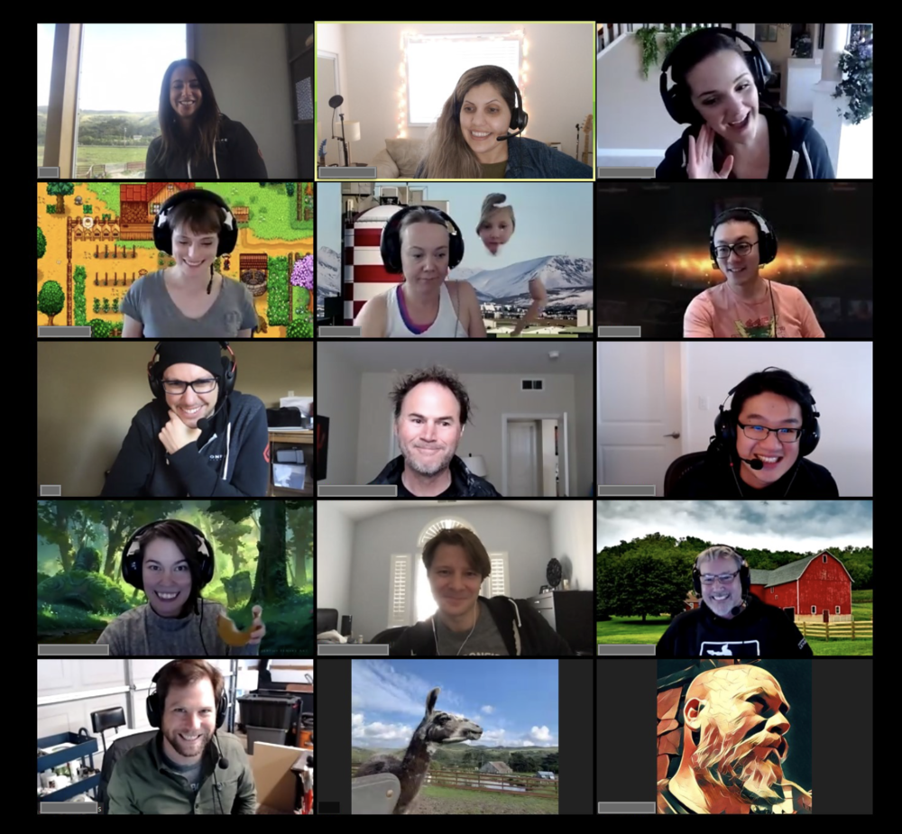

Группа поддержки · Онлайн
Группа поддержки и обмена навыками для нейроотличных людей. Здесь нейроотличность перестаёт быть проблемой, которую нужно решать, и становится контекстом, который можно исследовать.
Каждый четверг 19.00–20.30
Идёт набор участников!

Миссия
Мы не «чиним» СДВГ, аутизм или другие особенности. Мы учимся замечать, как устроены наше внимание, энергия, коммуникация и отдых, — и собираем рабочие стратегии, которые помогают именно нам.
Это пространство, где можно перестать маскироваться и начать исследовать себя. Мы не чиним СДВГ, аутизм и другие нейроотличия. Мы не учим быть «удобными» и не раздаём советы без спроса. Здесь можно молчать, путаться, опаздывать, выключать камеру, возвращаться после паузы — и всё это нормально.
Фасилитатор
Психолог · Коуч · Фасилитатор
Психолог с СДВГ и РАС. Понимаю изнутри — не только по учебникам.
КПТ (когнитивно-поведенческая терапия), АСТ (терапия принятия и ответственности), Lifestyle Medicine. Сам живу с СДВГ и РАС — это не просто теория.
Принципы
Встречи работают по правилам, которые создают безопасное и предсказуемое пространство.
Мы не пытаемся сделать участников «нормальнее» или удобнее. Мы изучаем свои паттерны.
Можно говорить, молчать, писать в чат, выключать камеру, уходить и возвращаться.
Делимся тем, что работает лично у нас, а не раздаём универсальные рецепты. Советы — только по запросу.
Личные истории и имена не выносятся за пределы встречи.
Не сравниваем, у кого «настоящий» диагноз или «тяжелее» опыт. Диагноз не обязателен.
У каждой встречи есть понятный сценарий, тайминг и практический результат.
Мы не ждём прорывов. Достаточно унести с собой одну идею или одно действие.
Клуб — поддержка и навигация, а не замена психотерапии, диагностики или лечения.
Формат встреч
Длительность: 75–90 минут. Формат: онлайн (можно без камеры). Структура повторяется от встречи к встрече — это создаёт предсказуемость.
Напоминаем правила. Короткий круг: «Какая сейчас батарейка?», «С каким вопросом пришли?» (до 1 минуты на человека).
Одна идея по теме: миф → что на самом деле → как проявляется у нейроотличных → один инструмент.
Общий вопрос для всех. Формула ответа: «Что было → что я чувствовал → что сработало / не сработало».
Каждый делится одной личной практикой. Ведущий записывает идеи на доске.
Каждый отвечает себе: «Что подходит? Что не подходит? Что попробую до следующей встречи?» (действие на <15 минут).
Короткий круг: «Сегодня я ухожу с…». Ведущий присылает доску, список инструментов и вопрос для наблюдения.
Темы
Каждая тема идёт по одному шаблону: разбираем миф, изучаем навык, получаем практический инструмент.
| Тема | Миф | Навык | Практика |
|---|---|---|---|
| Карьерная сверхфокусировка | «Если нравится работа — можно работать без ограничений» | Замечать, когда гиперфокус перестаёт приносить результат | Карта «что я приобретаю / что теряю» |
| Хороший отдых | «Настоящий отдых — ничего не делать» | Различать физическое, когнитивное, эмоциональное и сенсорное истощение | Подобрать свой способ восстановления для каждого типа |
| Апатия | «Из апатии надо себя вытаскивать» | Отличать апатию-истощение от прокрастинации | Карта «что сейчас пытается защитить моя нервная система?» |
| Коммуникация | «Достаточно просто быть собой» | Переводить свои потребности в форму, понятную собеседнику | Шаблон «что я хочу сказать → что услышат → как сформулировать яснее» |
FAQ
Да. Клуб открыт для людей с диагнозом, самодиагностикой и устойчивым узнаванием себя. Мы не ставим диагнозы и не спорим о «настоящести».
Нет. Мы не учим быть эффективнее любой ценой. Мы исследуем, как не выгорать и жить устойчивее.
Можно прийти просто послушать, отвечать в чате или вообще взять только структуру и упражнения.
Нет. По умолчанию мы делимся опытом, а не даём советы. Совет — только по явному запросу участника.
У нас строгий тайминг, модерация и право не углубляться. Мы не делаем из встречи эмоциональную воронку.
Вас не будут подталкивать к рывку. Поможем назвать состояние и найти минимально посильный шаг.
Встречи автономны. Можно возвращаться после паузы без объяснений и стыда.
Нет. Клуб даёт язык, поддержку и инструменты, но не заменяет психотерапию, диагностику и лечение. При тяжёлых состояниях обращайтесь к специалистам.
Стоимость
1 встреча
1100 ₽
или 14 $ / 13 €
Оплачивайте участие по ссылке и получите ссылку на встречу и чат новой группы в Телеграме.
Оплатить участие